Создание и редактирование векторных слоев средствами QGIS
Описание инструментария QGIS для работы с векторными данными
QGIS – динамично развивающаяся свободная пользовательская ГИС, представляющая довольно развитый инструментарий для работы с любой пространственной информацией. Мы уже разбирали вопросы привязки растровых данных с помощью QGIS. В этой статье мы остановимся на работе с векторными объектами. Данная статья иллюстрирована примерами англоязычного интерфейса, однако вы легко можете использовать и русифицированный.
Оглавление
- Создание векторного слоя
- Настройка параметров редактирования векторного слоя
- Топологическое редактирование и прилипание нескольких слоев
- Работа с точечными слоями
- Работа с линейными слоями
- Работа с полигональными слоями
Для создания векторного слоя выберем New Vector Layer в меню Layer или воспользуемся кнопкой , по умолчанию расположенной на панели инструментов. В открывшемся диалоговом окне зададим необходимые параметры.
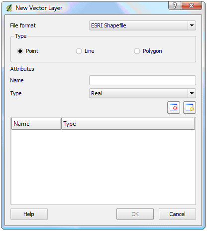
Создание нового векторного слоя
Во-первых, это формат файла, в котором будут храниться данные нового слоя. В текущей версии QGIS (0.11.0 – Metis) таким форматом, причем единственным, является ESRI Shapefile. Во-вторых, тип создаваемого слоя, здесь всё стандартно – точечный (Point), линейный (Line) или полигональный (Polygon). Также необходимо определить минимум одно поле таблицы атрибутов. В поле Name задается его имя, а в поле Type выбирается тип – действительное число (Real), целое число (Integer) или строка (String). Для добавления и удаления полей служат кнопки 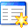и 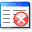. После того, как все необходимые параметры были заданы, нажимаем кнопку OK, задаем имя папки, в которой будут храниться наши данные, и переходим к редактированию только что созданного слоя.
Отметим, что встроенный в QGIS редактор таблиц атрибутов не позволяет добавлять новые и удалять имеющиеся поля созданного ранее shape-файла, однако это ограничение можно обойти, установив специальное расширение.
 Настройка параметров редактирования векторного слоя
Настройка параметров редактирования векторного слоя
Для настройки параметров редактирования выберем Options в меню Settings и перейдем на вкладку Digitizing. В открывшемся диалоговом окне видим три группы параметров: Rubberband, Snapping и Vertex markers.
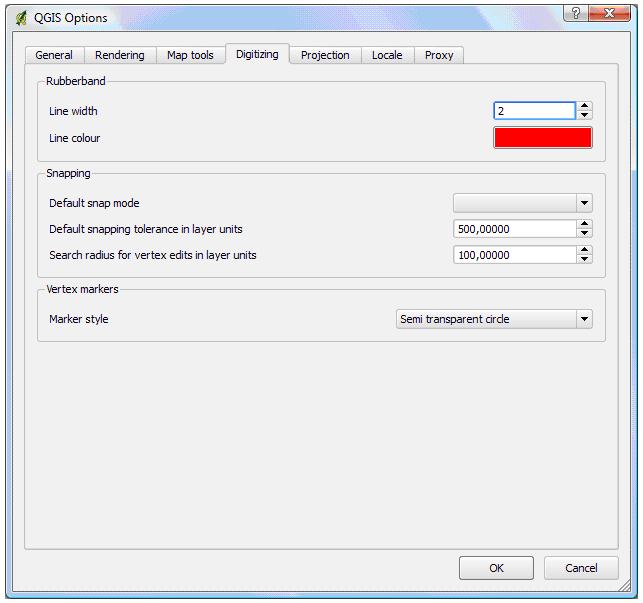
Настройка параметров редактирования
Параметры Line width и Line color группы Rubberband определяют толщину и цвет линии, используемой при рисовании линейных и полигональных объектов.
Параметр Marker style группы Vertex markers определяет стиль маркера вершины - Semi transparent circle (полупрозрачный круг) или Cross (перекрестие).
Группа параметров Snapping отвечает за настройку прилипания – автоматического совмещения узлов объектов при редактировании. Default snap mode – режим прилипания по умолчанию. Можно задать один из трех режимов: to vertex (к вершине), to segment (к сегменту), to vertex and segment (к вершине и сегменту). Default snapping tolerance in layer units – порог прилипания. Режим и порог прилипания работают следующим образом: при подведении курсора мыши на определенное расстояние (порог прилипания) от сегмента или вершины (в зависимости от режима прилипания), рисуемая линия автоматически продолжается до касания с ближайшим сегментом или вершиной. На рисунке представлен пример использования различных режимов прилипания.
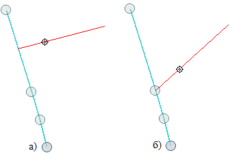
Режимы прилипания (большой кружок – вершины существующей линии, синяя, маленький – последняя вершина создаваемой линии, красная): а) к сегменту, б) к вершине
Search radius for vertex edits in layer units – радиус поиска ближайших вершин, используется при перемещении, удалении или добавлении вершин. Если в круг с центром в месте щелчка мышью и радиусом Search radius for vertex edits in layer units попадает хотя бы одна вершина, то выбирается ближайшая из них. При нулевом значении параметра Search radius for vertex edits in layer units или в случае если в указанный круг не попадает ни одной вершины появляется сообщение о том, что не задан порог прилипания, хотя порог прилипания здесь непричем. Порог прилипания и радиус поиска ближайших вершин задаются в единицах измерения слоя.
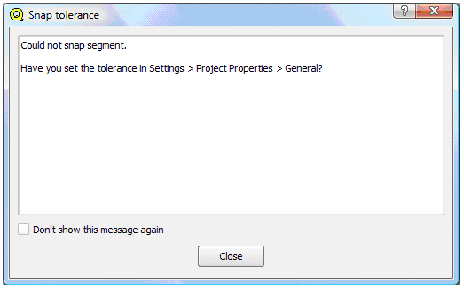
Сообщение об отсутствии порога прилипания
Для сохранения изменений жмем OK. Данные настройки будут применяться ко всем слоям новых проектов, создаваемых в QGIS.
 Топологическое редактирование и прилипание нескольких слоев
Топологическое редактирование и прилипание нескольких слоев
Кроме только что рассмотренных настроек, в QGIS имеются дополнительные возможности, позволяющие, помимо всего прочего, настроить параметры прилипания в отдельности для каждого слоя. Рассмотрим дополнительные настройки редактирования и параметры прилипания.
В меню Settings выбираем Project Properties и переходим на вкладку General. Нас будет интересовать группа параметров Digitizing.
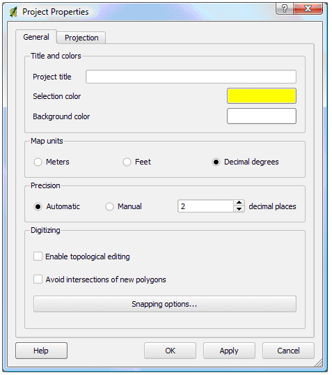
Настройка параметров проекта
Enable topological editing – включение режима топологического редактирования. Если топологическое редактирование включено, то при перемещении вершины, принадлежащей одновременно нескольким объектам (полигонам или линиям), их геометрия изменится в соответствии с новым положением перемещенной вершины. Если же топологическое редактирование отключено, то изменения коснутся только одного объекта.
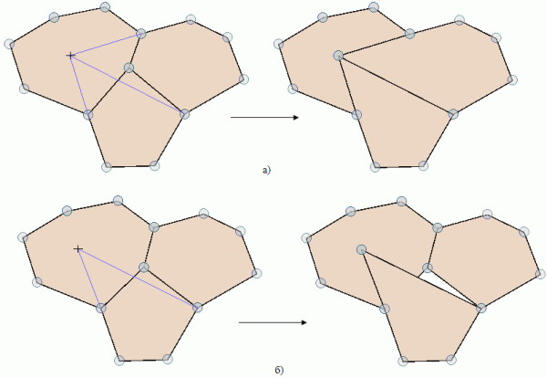
Включенный (а) и выключенный (б) режим топологического редактирования
Avoid intersections of new polygons – предотвращение пересечения новых полигонов. Если активировать этот пункт, то при создании нового полигона в случае наложения его на уже существующий, часть нового полигона, попадающая в наложение, будет исключена.
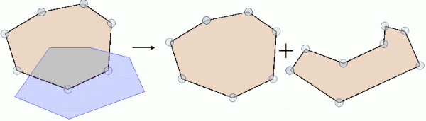
Пример предотвращения пересечения полигонов
Нажимаем кнопку Snapping options и переходим к настройке прилипания для отдельных слоев.
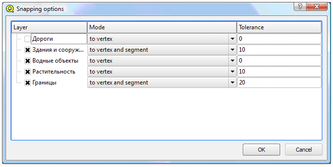
Настройка прилипания для отдельных слоев
В столбце Layer расположены слои текущего проекта. Если слой отмечен крестиком, то настройки прилипания для него включены. В столбце Mode настраивается режим прилипания для каждого слоя, а в столбце Tolerance – порог расстояния прилипания.
ВАЖНО!!! Если нажать OK в окне Snapping options, а затем Apply в окне Project Properties, то настройки Default snap mode и Default snapping tolerance in layer units, которые мы указывали до этого, утрачивают свою силу для текущего проекта навсегда. И поэтому каждый раз, добавляя новый слой, вам необходимо через Snapping options указывать для него настройки прилипания.
На этом процесс настройки параметров редактирования векторного слоя можно считать оконченным.
Прежде чем приступать к редактированию любого векторного слоя убедитесь в том, что у вас включена панель инструментов Digitizing. Если она отсутствует, то ее следует включить: в меню View выберете Toolbar Visibility и активируйте панель Digitizing. Добавьте в проект имеющийся или создайте новый точеный слой, следуя вышеприведенным инструкциям. После этого выберите его, щелкнув на нем в легенде, иконка Toggle editing станет активной: 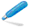. Для того чтобы начать редактирование, щелкните на ней (в QGIS по умолчанию слой открыт только для чтения). Панель инструментов Digitizing для точечного слоя будет выглядеть следующим образом:
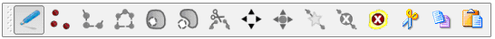
Панель инструментов Digitizing точечного слоя
Щелкните на иконке Capture Point: 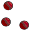для того чтобы добавить новый точечный объект. После этого левой кнопкой мыши щелкните в то место, где бы вы хотели его расположить. В появившемся окне укажите значения атрибутов. На этом процедура добавления нового точечного объекта закончена.
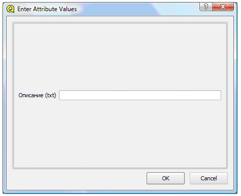
Окно ввода значений атрибутов
Попробуйте добавить ещё один точечный объект. Если после щелчка на новом месте объект не появляется, убедитесь в том, что у вас не включен режим прилипания к вершине. В этом случае новый точечный объект может прилипнуть к уже существующему и слиться с ним. В таком случае следует просто отключить прилипание.
Инструмент Move Feature: 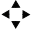позволяет перемещать точечные объекты. Этот инструмент работает следующим образом: нажимаем на иконку , после чего щелкаем рядом с объектом, который мы хотим переместить. В соответствии со значением Search radius for vertex edits in layer units выбирается ближайший точечный объект, при этом он становится выделенным. Не отпуская левой клавиши мыши, переместим наш объект на новое место и отпустим клавишу – объект будет перемещен.
С точечным объектом можно производить простейшие операции, такие как удаление: 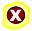, вырезание: , копирование: 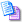 и вставку: 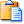, причем вставлять вырезанный или скопированный объект можно как на текущий слой, так и на любой другой слой такого же типа. Но прежде чем осуществлять эти операции, нужный объект следует выделить. Для этого существует инструмент Select Features: 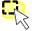панели инструментов Attributes.
Кроме того, в QGIS есть возможность редактирования атрибутов. Щелкните на иконке Open Table: 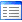 панели инструментов Attributes. Перед вами откроется диалоговое окно.
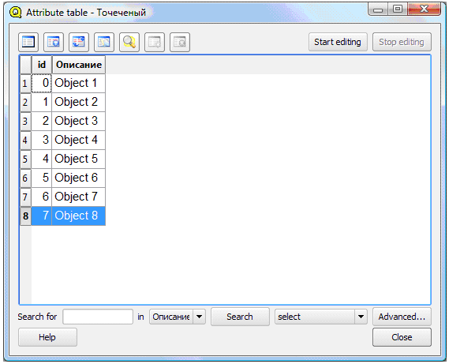
Окно редактирования атрибутов
Для начала редактирования нажмите кнопку Start editing, отредактируйте атрибуты и нажмите кнопку Stop editing, после чего подтвердите или откажитесь от сохранения внесенных изменений. Как уже отмечалось выше, пока операции по удалению имеющихся и добавлению новых полей в таблицу атрибутов shape-файла в QGIS реализованы только с помощью специального расширения.
Добавьте в проект имеющийся или создайте новый линейный слой, следуя вышеприведенным инструкциям. После этого выберите его, щелкнув на нем в легенде. Для того чтобы начать редактирование, щелкните на иконке Toggle editing: , панель инструментов будет выглядеть следующим образом:
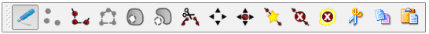
Панель инструментов Digitizing линейного слоя
Чтобы добавить линейный объект, щелкните на иконке Capture Line: 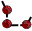. После чего последовательно указывая вершины, используя левую клавишу мыши, нарисуйте линейный объект. Точка, завершающая ввод линейного объекта, указывается щелчком правой клавиши мыши. В появившемся окне укажите значения атрибутов. На этом процедура добавления нового линейного объекта закончена.
Работа инструментов удаления, вырезки, копирования и вставки линейных объектов аналогична работе этих же инструментов в случае точечных объектов.
Инструмент Move Feature:позволяет перемещать кроме точечных также и линейные объекты. Этот инструмент работает следующим образом: нажимаем на иконку, после чего щелкаем рядом с объектом, который мы хотим переместить. В соответствии со значением Search radius for vertex edits in layer units выбирается ближайшая вершина, а линия, которой принадлежит эта вершина, становится выделенной. Не отпуская левой клавиши мыши, переместим выделенную линию на новое место и отпустим клавишу – объект будет перемещен.
Инструмент Move Vertex: 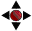 позволяет перемещать вершины линейного объекта. Этот инструмент работает следующим образом: нажимаем на иконку, после чего щелкаем рядом с вершиной, которую хотим переместить. В соответствии со значением Search radius for vertex edits in layer units выбирается ближайшая вершина. Не отпуская левой клавиши мыши, переместим выбранную вершину на нужное место и отпустим клавишу. Перемещение вершины будет происходить в соответствии с настройками прилипания для данного слоя (не допускайте прилипания вершины к другой вершине одного и того же объекта).
Инструмент Add Vertex: 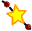 позволяет добавлять новые вершины к линейному объекту. Этот инструмент работает следующим образом: нажимаем на иконку , после чего щелкаем в то место, куда мы хотим добавить новую вершину. В соответствии с параметром Search radius for vertex edits in layer units выбирается отрезок ломаной (подсвечивается), на который будет добавлена новая вершина. Не отпуская левой клавиши мыши, переместим добавленную (пока виртуально) вершину на нужное место и отпустим клавишу либо отпустим её сразу после нажатия, если нужным местом является место щелчка. Если расстояние от места, на котором была отпущена левая клавиша мыши, до ближайшего сегмента или вершины (в зависимости от режима прилипания) меньше порога прилипания, то новая вершина добавится либо к сегменту, либо к вершине (подобных ситуаций прилипания к вершинам следует избегать), в противном случае новая вершина добавится непосредственно в то место, где была отпущена левая клавиша мыши.
Инструмент Delete Vertex: 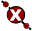 позволяет удалять вершины линейных объектов. Этот инструмент работаем следующим образом: нажимаем на иконку, после чего щелкаем рядом с вершиной, которую мы хотим удалить. В соответствии со значением Search radius for vertex edits in layer units выбирается ближайшая вершина и отмечается перекрестием. При отпускании левой клавиши мыши отмеченная вершина удалится.
И, наконец, рассмотрим последний инструмент, использующийся при редактировании линейных слоев. Инструмент Split Features: 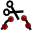 позволяет разделять линейные объекты на несколько отдельных объектов. Очевидно, что разделить объект на несколько частей можно либо в точках сегмента, либо в вершинах. В первом случае отключаем прилипание к вершинам, нажимаем на иконку и проводим секущую через точку сегмента, в которой мы хотим разделить объект. Во втором случае, наоборот, включаем прилипание к вершинам и проводим секущую через вершину, в которой следует разделить объект. Отметим, что таким образом можно разделять одновременно несколько объектов.
Точно также как и в случае с точечным слоем, в линейном слое можно осуществлять редактирование атрибутов, используя инструмент Open Table: .
 Работа с полигональными слоями
Работа с полигональными слоями
Добавьте в проект имеющийся или создайте новый полигональный слой, следуя вышеприведенным инструкциям. После этого выберите его, щелкнув на нем в легенде. Для того чтобы начать редактирование, щелкните на иконке Toggle editing: , панель инструментов будет выглядеть следующим образом:
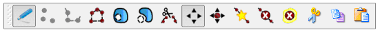
Панель инструментов Digitizing полигонального слоя
Принцип работы с инструментами полигонального слоя аналогичен работе с инструментами линейного слоя, поскольку полигон есть не что иное, как замкнутая линия. Однако есть инструменты, которые при работе с линейным слоем были недоступны. Вот на них и остановимся.
Чтобы добавить полигон, щелкните на иконке Capture Polygon: 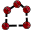. После чего последовательно указывая вершины, используя левую клавишу мыши, нарисуйте полигональный объект. Точка, завершающая ввод полигона, указывается щелчком правой клавиши мыши. В появившемся окне укажите значения атрибутов. На этом процедура добавления нового полигонального объекта закончена.
Рассмотрим новые инструменты, которые были недоступны при редактировании линейного слоя. Инструмент Add Ring: позволяет создавать полигоны в виде кольца. Для этого сначала нарисуйте полигон, затем нажмите на иконку и нарисуйте полигон внутри уже имеющегося. Область последнего полигона будет исключена из имеющегося, и в результате мы получим полигон в форме кольца.
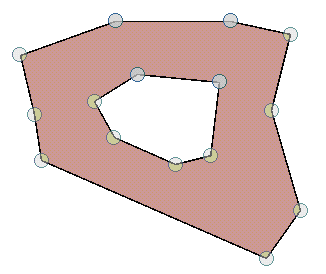
Полигон в форме кольца
Инструмент Add Island: 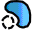 позволяет добавлять к полигонам в форме колец острова. Для того, чтобы добавить остров, выделите полигон в форме кольца, используя инструмент Select Features: , затем нажмите на иконку и нарисуйте внутри кольца острова.
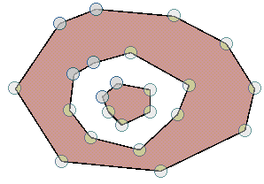
Полигон в форме кольца с островом
Точно также как и в случае с точечным и линейным слоем, в полигональном слое можно осуществлять редактирование атрибутов, используя инструмент Open Table: .
Ссылки по теме
Дата создания: 27.09.2008
Автор(ы): Денис Рыков